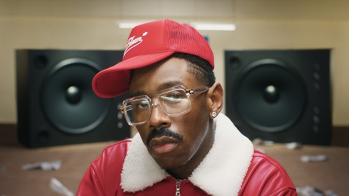

My Music Page
This is a page I created,
to document all the music & artists I like!
Favorite Artist: Tyler, The Creator

Favorite Songs:
- "ARE WE STILL FRIENDS?",
- "See You Again (feat. Kali Uchis)",
- "Like Him (feat. Lola Young)",
- "Darling, I (feat. Teezo Touchdown)"
- "Sugar On My Tounge",
- "Don't You Worry Baby (feat. Madison McFerrin)",
- "I'll Take Care Of You (feat. Yebba)"
Best Albums (IMO):
- Chromakopia
- IGOR
- Don't Tap The Glass
Some of My Other Favorite Artists...